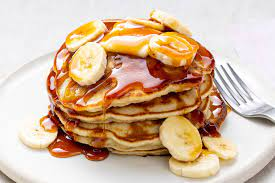

Easy Banana Pancakes

I'm going to show you how to make an easy two ingredient banana pancake recipe.
Ingredients
- 2 eggs
- 1 banana
- The ratio is 2 eggs for 1 banana and will yield about two big pancakes
- Combine your eggs and banana together, I like to use a meat pounder or an electric whisk. Make sure it achieves a smooth texture with minimal chunks
- While whisking heat up your pan with whatever oil you choose. I always prefer butter.
- Add mixture to the pan and allow each side to cook until solid, flipping consistently to avoid burning.
- Once finished serve with peanut butter, maple syrup, and more sliced bananas.